나폴레옹 전쟁과 제2차 세계대전, 그 놀라운 유사성
게시: 2021-05-13T06:30:03+09:00
최근 프랑스 대통령 마크롱이 나폴레옹을 추모하며 '그의 공과 과를 모두 끌어안아야 한다'라고 했다지요? 전통적으로 프랑스의 지도자들은 나폴레옹에 대해 언급하는 것을 어지간하면 회피합니다. 그만큼 기피 인물이라는 소리입니다. 그리고 거기에는 이유가 있지요. 나폴레옹은 사실상 당대에는 히틀러급 인물이었기 때문입니다.
인간은 과거를 통해 배웁니다. 그래서 모든 나라의 중요 교과목에는 반드시 역사가 포함되어 있는 것입니다. 게다가 역사는 되풀이된다고 하지요. 실제로 많은 역사가 되풀이되었고, 이는 특히 주식 시장에서 그렇습니다. 에드워드 챈슬러라는 영국 기자가 쓴 "금융투기의 역사" (국일증권경제연구소 펴냄)에 이런 이야기가 나옵니다. "인간이라는 동물은 정말 놀랍다. 어떻게 똑같은 덫에 한번도 빼먹지 않고 걸린단 말인가 !" 나폴레옹을 둘러싼 역사에서도 그렇게 배울 점이 많습니다. 특히, 나폴레옹 전쟁과 제2차 세계대전은 정말 놀랍도록 유사한 점이 많습니다. 나폴레옹 전쟁이라고 하면 원래 1803년 아미앵 평화조약이 깨지면서부터 1815년 워털루 전투까지의 12년간의 전쟁을 뜻합니다. 사실 이 전쟁은 프랑스 대혁명을 진압하기 위한 1793년 제1차 동맹 (영국, 오스트리아, 프러시아, 스페인 등 주동)서 시작되었으므로, 나폴레옹의 이탈리아 원정이나 이집트 원정까지 포함하면 거의 20년 동안의 전쟁이었습니다.
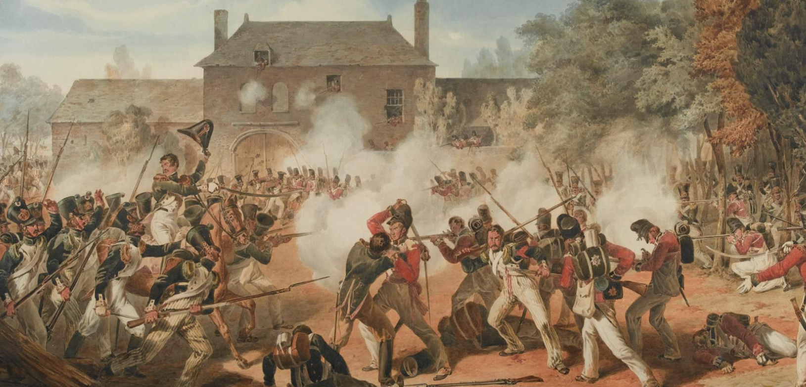
(20년 동안 이 짓거리를 한다고 생각해 보세요...) 생각해보면 유럽은 항상 전쟁 중이었습니다. 하지만 로마제국 멸망 이후, 유럽 전역, 유럽의 전 국민이 전쟁의 소용돌이에 휘말렸던 적은 없었습니다. 가장 치열하고 '악랄'한 전투와 약탈이 벌어졌던 30년 전쟁도, 주무대인 독일을 초토화시켰을 뿐, 프랑스나 스페인, 이탈리아 등지는 직접적인 전쟁 피해에 휘말리지는 않았습니다. 또, 전국민들에 대해 동원령이 선포되지도 않았습니다. 하지만 나폴레옹 전쟁은 그 이전의 전쟁들과는 뭔가 다른 모습을 보여주었습니다. 1. 특정 지역이 아니라, 유럽 전역이 전화에 휘말렸습니다. - 이는 나폴레옹 특유의 발로 뛰는 야구...아니 전쟁 때문인데, 기차도 자동차도 없는 시대의 전투치고는 정말 짧은 기간에 정말 넓은 지역, 그러니까 서쪽으로는 스페인부터 동쪽으로는 러시아까지, 북쪽으로는 덴마크부터 남쪽으로는 말타 섬까지 유럽 대륙 전체가 전장이 되었습니다.
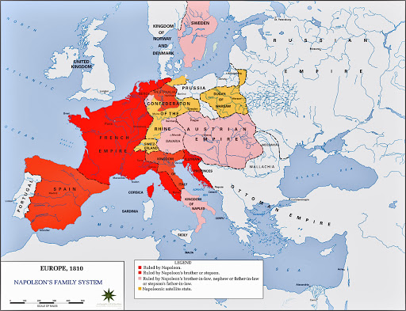
(1810년, 나폴레옹 하에서의 유럽 지도) 2. 유럽 뿐만이 아니라, 당시 유럽이 영향력을 가지고 있던 전세계에서 전투가 벌어졌습니다. - 전쟁은 지중해, 대서양은 물론 카리브해와 인도양, 심지어 태평양에서도 벌어졌습니다. 또한 이집트, 시리아, 이오니아 해의 여러 섬 등 유럽에서 가까운 지역 뿐만 아니라, 인도 대륙과 북미 대륙에서도 프랑스와 영국이 여러가지 형태의 대리전을 벌였습니다.
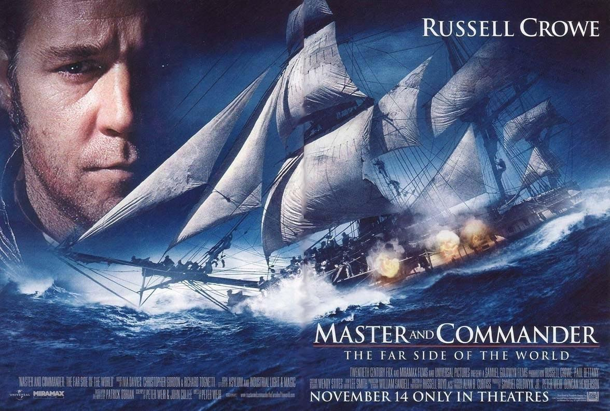
(왜 이 영화의 부제가 "세계 저 반대쪽 편에서"인지 아시겠습니까 ?) 3. 최초로 총력전의 개념이 도입되었습니다. - 프랑스의 경우, 워낙 압도적인 적군을 상대하려다보니 근대 최초로 국민 개병제의 개념을 도입하여 징집제를 실시했습니다. 이로써, 전쟁은 어느 영주 및 그 식솔들만의 이야기가 아닌, 프랑스 전 국민들과 직접적인 관계를 가지는 사건이 되어 버렸습니다. 영국의 경우, 유럽의 군주국들을 부추겨 프랑스와의 전쟁을 계속하게 하기 위해서는 많은 돈이 필요했고, 그를 위해서는 반드시 해외 식민지가 필요했습니다. 프랑스도 이를 잘 알고 있었으므로 영국의 돈줄, 특히 인도와의 통상로를 위협하기 위해 부단한 노력을 기울였습니다. 이로 인해 바로 위에 들었던 점, 즉 전세계에서 전투가 벌어지게 되었던 것입니다. 이렇게 나폴레옹 전쟁과 그 이전 전쟁의 다른 점을 몇개 늘어놓고 보니까, 제2차 세계대전과 상당히 유사하다는 생각이 들지 않으십니까 ? 제2차 세계대전과 나폴레옹 전쟁과의 유사점을 정리해보면 다음과 같습니다. 1. 기득권 세력 vs. 독재 혁명 세력 제1차 세계대전은 사실 고만고만한 욕심꾸러기 깡패들의 패싸움이라고 밖에 설명이 안됩니다. 당시 미국이나 영국이 독일이나 오스만 제국에 비해 도덕적으로 더 우월하다고 볼 수 없었지요. 하지만 제2차 세계대전으로 오면, 정말 독일은 악의 제국이고, 그에 맞서 싸운 영국이나 미국은 정의의 화신처럼 그려집니다. 나폴레옹 전쟁 당시도, 이와 비슷한 분위기가 조성되었습니다. 나폴레옹은 오늘날 대표적인 세계 위인 중의 하나로 떠받들어집니다만, 당대에는, 적국은 물론이고 심지어 프랑스인들로부터도 전쟁광에 독재자로 불렸습니다. 생각해보면 당연합니다. 나폴레옹과 이름을 나란히 하는 세계적인 영웅들, 그러니까 알렉산드로스, 케사르, 징기스칸 등도 모두 당대 적국 사람들에게는 철천지 원수였습니다. 사실 따지고 보면 히틀러는 합법적인 선거로 선출된 정당한 민주 정권이었고, 나폴레옹은 쿠데타로 정권을 잡은 오리지널 군사 독재 정권이었으니까, 족보를 따져보면 나폴레옹이 히틀러보다 더 욕을 먹어야 합니다.
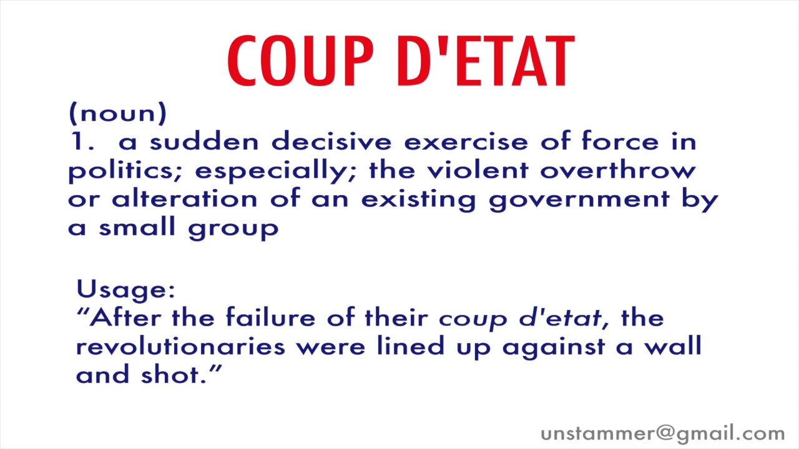
(쿠데타라는 말이 영어에서 처음 쓰인 것으로 기록된 것은 1802년 런던 Morning Chronicle지에 나폴레옹이 모로를 잡아가둔 사건을 보도한 기사라고 합니다.) 사실 히틀러나 나폴레옹이나, 당시 정권을 잡을 수 있었던 것은 시대의 요구에 교묘하게 부합했기 때문입니다. 히틀러 당시 독일은 제1차 세계대전 패전 이후 막대한 배상금으로 인한 압박에다, 세계대공황으로 인한 경제 파탄, 공산주의의 위협으로 인해 극심한 혼란 상태였고, 어떻게든 그를 극복할 누군가를 필요로 했습니다. 히틀러는 반유태주의와, '게르만족의 정당한 권리'를 내세워 이를 실제로 극복했지요. 결국은 파국으로 치닫고 말았지만요. 당시 극심한 경제난과 패배주의에 시달리던 독일을 장악한 히틀러의 파시스트 정권은, 다른 유럽 국가들에게 있어서는 자신들의 기득권을 침탈하는 혁명적 과격 정권이었고, 어떻게 해서든 그 세력의 전파를 틀어막아야 할 대상이었습니다. 나폴레옹도 마찬가지였습니다. 혁명 이후 총재 정부의 혼란과 부패, 고질적인 재정 적자와 아시냐 지폐의 파탄, 그리고 혁명을 꺾으려는 외국 군주들의 군사적 위협, 게다가 프랑스 국내의 왕당파들의 준동으로 인해 프랑스는 당시 절대절명의 위기였습니다. 나폴레옹은 그 군사적 천재성으로 이 모든 위협을 한번에 해결해주었습니다.

(노골적인 경제적 침탈을 목적으로 한 전쟁, 이탈리아 원정 중 리볼리 전투) 문제는 히틀러나 나폴레옹이나, 자국의 문제 해결을 위해 타국의 희생을 강요했다는 것이었습니다. 히틀러가 인근 점령지들, 특히 동유럽 국가들을 잔인하게 수탈했다는 것은 유명한 일이지만, 나폴레옹도 못지 않게 대륙의 유럽 국가들을 세금, 징집 및 전쟁 배상금의 명목으로 수탈했습니다. 특히 당시 프로이센, 러시아, 오스트리아에게 분할 점령되어 국가로서는 소멸 상태였던 폴란드의 경우는, 독립 국가로 재탄생시켜주겠다는 나폴레옹의 낚시에 걸려 '몸도 주고 마음도 주었지만' 결국 철저한 배신을 겪어야 했습니다. 하지만 분명히 나폴레옹은 세계 위인전에 이름을 올리고, 히틀러는 세계 악인 명단에 이름을 올립니다. 히틀러가 욕을 먹는 점을 생각해보면, 유태인 학살, 비밀경찰, 게르만 극우 민족주의 등등 매우 많습니다. 그런데 나폴레옹도 비밀경찰을 운영했고, 언론 검열을 실시했으며, 노골적인 독재권력을 실시했을 뿐만 아니라, 생 도밍그(오늘날의 아이티)에서는 반란 흑인 노예들을 대량으로 학살하기도 했습니다. 다행인 것은 프랑스인이 인종적으로 뛰어나다는 개소리는 하지 않았다는 점 정도입니다. 사실 나폴레옹 휘하에는 그의 비전을 숭상하는 많은 독일인과 이탈리아인, 폴란드인들이 복무했었습니다. 그 외에도 나폴레옹의 전쟁 행위에서 전범 행위에 해당하는 것들은 스페인 게릴라 전쟁에서의 잔혹한 민간인 학살 행위와 투르크군 포로 학살 등이 있습니다. 물론 전쟁이 모두 끝난 뒤에 셈을 해보면, 히틀러가 저지른 온갖 악행과 나폴레옹의 악행은 비교가 안되지요.
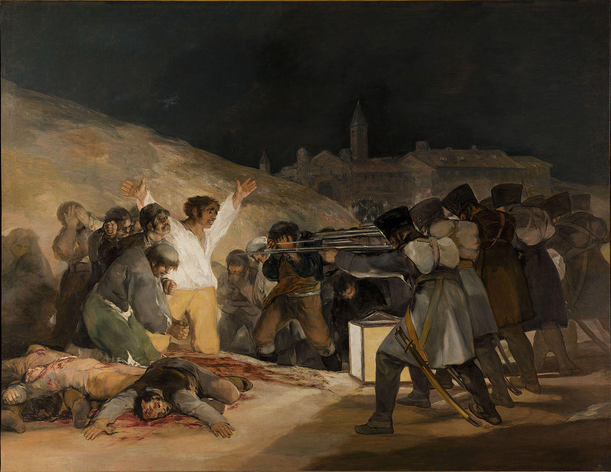
(고야의 명작... 마드리드 5월 3일의 처형) 하지만 그래도 두 사람은 닮은 점이 꽤 많습니다. 일단, 둘다 권력을 잡은 나라의 원주민이 아니라 각각 오스트리아와 코르시카라는 외국 국적을 가진 사람들이라는 점이 눈에 띕니다. 나폴레옹은 얼치기 작가적 소양이 있었고, 히틀러는 삼류 화가적 소양이 있었다는 것은 다들 잘 아실 것입니다. 게다가 두 사람 모두 키가 좀 작았다는 점도 동일하네요. 그리고 두 사람 모두 정권 유지를 위해 많은 대중 선동을 펼쳤습니다. 히틀러의 경우는 잘 아실 것이고, 오늘날 우리가 볼 수 있는 많은 나폴레옹을 주제로 한 예술 작품들은 다 그런 목적으로 만들어진 것들입니다. 가령 나폴레옹이 알프스를 넘을 때 아래처럼 멋진 모습으로 넘었겠습니까 ? 실제로는 나폴레옹은 알프스를 넘을 때, 볼 품은 없어도 안정적이고 지구력이 좋은 노새를 타고 넘었다고 합니다.
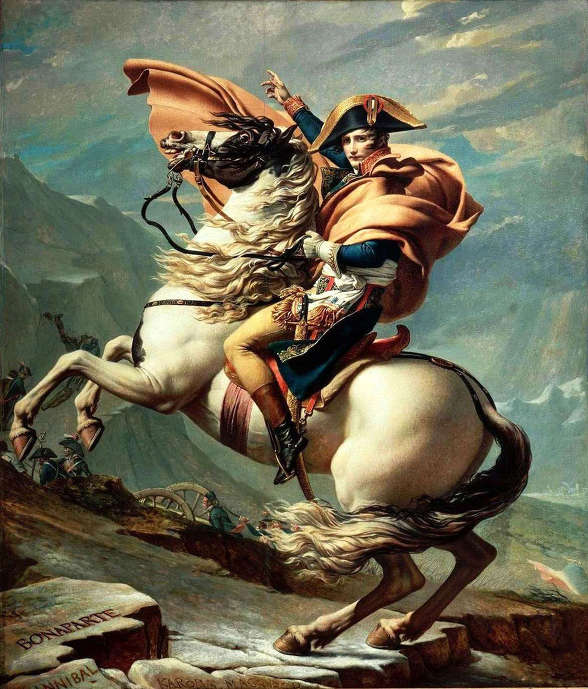
(으흥...?)
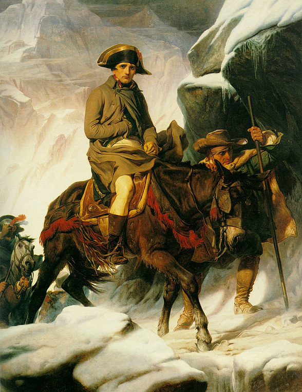
(으흥 !!) 2. 대륙 세력 vs. 해양 세력 나폴레옹이나 히틀러나 영국에 대해서는 애증이 뒤섞인 감정을 가지고 있었습니다. 나폴레옹과 히틀러 모두 사실상 유럽 전역을 제패하고 자신의 지배를 강요할 수 있었지만, 바다를 제패한 영국에 대해서는 그럴 수가 없었습니다. 독일 공군을 동원하여 영국 도시들을 불태웠던 히틀러가 그나마 분풀이라도 제대로 할 수 있었지요. 결국 나폴레옹 전쟁이나 제2차 세계대전이나, 유럽의 입장에서 보았을 때는 대륙 vs. 해양의 세력 대결이었습니다. 그리고 두번 모두 결국 해양 세력의 승리로 끝이 났습니다. 뜻하는 바는 무엇일까요 ? 결국 전쟁은 총으로 한다기 보다는 돈, 정확하게는 보급으로 하는 것이다라는 것입니다. 그런데 이 사실이 뜻하는 바가 하나 더 있습니다. 왜 바다를 지배하는 자가 돈을 더 많이 가지게 되는 것일까요 ? 결국 당시 부(富)는 유럽 대륙에서 생산해내는 것이 아니라 해외 식민지로부터 수탈하는 것이었기 때문에, 제해권을 가진 쪽이 결국 장기전에서는 승리할 수 있었던 것일까요? 그렇게 볼 수도 있습니다. 그러나 그런 관점으로는 제2차 세계대전에서도 미국과 영국이라는 해양 세력이 승리한 것을 설명할 수는 없습니다. 결국은 나폴레옹 당시의 영국이나, 제2차 세계대전 당시의 미국이나, 모두 프랑스 및 독일에 비해 압도적으로 강한 공업 생산력을 가졌던 것이 승리의 근본 원인이라고 할 수 있습니다. 어떻게 보면 제해권은 공업 생산력의 결과이지 원인은 아닌 것일 수도 있습니다.
게다가 확실히 다른 관점도 있습니다. 나폴레옹 전쟁이나 제2차 세계대전이나, 어쩌면 해양 세력의 승리라기보다는 그냥 러시아의 승리라고 볼 수도 있다는 것지이지요. 이에 대해서는 저 아래에서 다루지요.
3. 뜬금없이 북아프리카는 왜 ? 나폴레옹 전쟁과 제2차 세계대전은 정말 특이한 공통점을 가집니다. 바로 북아프리카 작전입니다. 두 전쟁 모두 유럽 국가끼리의 전쟁이었는데 정말 어이없게도 북아프리카 지역이 전화에 휘말렸던 것입니다. 왜 두 전쟁 모두 북아프리카를 그 시나리오에 포함시키게 되었을까요 ? 위에서 말한 점, 즉 대륙 vs. 해양의 대결이라는 점과 상관 있습니다. 먼저 제2차 세계대전의 경우를 보지요. 독일이 리비아와 이집트에서 작전을 펼쳤던 것은 우연과 필연이 합쳐진 것이었습니다. 이탈리아의 낭만주의 독재자인 무솔리니가, 고대 로마 제국의 영광을 재현하겠다는 망상으로, 별 이유도 없이 영국령 이집트를 침공했다가 오히려 역공을 당해서 본전도 못찾았던 것이 독일을 끌어들이게 된 직접적인 이유였습니다. 하지만 근본적인 이유는, 역시 약간 망상이긴 했습니다만, 히틀러의 나름대로 원대한 전략 때문이었습니다. 즉, 한정된 자원 밖에 없던 유럽 대륙을 제패해봐야, 결국 영국의 물량전에 휘말릴 수 밖에 없다는 것을 잘 알고 있던 히틀러는, 이집트와 시리아를 거쳐 신생 터키 공화국을 압박하여 추축국 동맹에 끌어들이고, 더 나아가 남쪽으로부터 북진하여 아제르바이잔 바쿠의 유전지대를 점령한다는 꿈을 꾸게 되었던 것입니다. 나폴레옹의 이집트 원정은 왜 시작되었을까요 ? 이것도 놀랄 만큼 히틀러의 망상과 비슷한 점이 있습니다. 표면적 대의명분은 오스만 투르크의 압제로부터 이집트 민중을 해방시킨다든지, 문명의 발상지 이집트로 문명을 되돌려준다든지 하는 터무니없는 것들이었습니다. 이는 나폴레옹 개인의 야욕과 프랑스 총재 정부의 무모함이 합쳐진 결과이기는 했습니다만, 대신 당시 프랑스인들의 낭만주의와 창의성을 보여주는 대목이기도 합니다. 역시 독일보다는 프랑스인들이 문화적으로는 더 낫지요? 가령 나폴레옹은 이집트 원정에 인쇄기와 열기구 등을 가져가서 현지인들에게 유럽의 문화를 홍보하는데 써먹었습니다. 물론 효과는 없었지요.
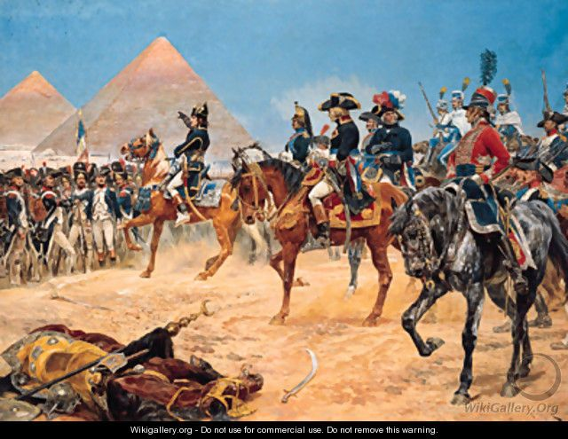
(근데 우린 여기 왜 온거야 ? 좀 뜬금 없쟎냐 ?) 나폴레옹이 이집트를 침공한 현실적인 (사실 그다지 현실적이지 못합니다만) 이유는 히틀러와 비슷했습니다. 즉, 영국의 돈줄이었던 인도로 가는 길을 닦겠다는, 오히려 히틀러보다도 더 황당하고, 문명의 발상지 이집트에 문명을 되돌려준다는 표면적 대의명분보다도 더 어이없는 계획이었지요. 사실 나폴레옹은 소년 시절 읽었던 알렉산드로스 대왕처럼, 이집트와 시리아를 거쳐 메소포타미아를 관통하고 페르시아를 정복한 뒤, 인도까지 도달하여 불멸의 영광을 이루고 싶었다고 합니다. 나폴레옹같은 대인물이 그런 황당한 계획을 세웠을 것 같지 않지만, 사실 나폴레옹은 젊은 시절부터 상당히 오버질을 많이 하는 경향이 있었기 때문에, 정말 그랬을 가능성이 아주 많습니다. 하지만 히틀러나 나폴레옹이나, 결국 영국의 육해군에 의해 그 꿈이 철저히 깨지게 됩니다. 히틀러는 이집트의 엘 알라메인에서, 나폴레옹은 시리아의 생 장 다르크(아크레)에서 저지되었습니다. 히틀러나 나폴레옹 모두 제대로 힘을 쓸 수 없었던 이유가 바로 영국의 로열 네이비였다는 것은 굳이 말씀드리지 않아도 다 아실 것입니다.
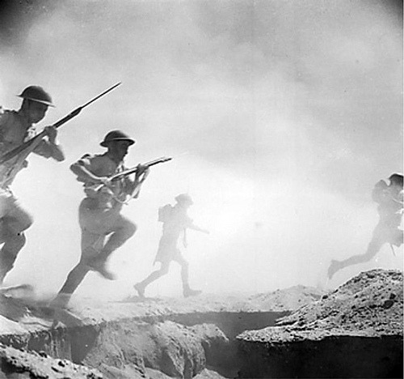
(롬멜이고 뭐고, 독일군 제리놈들 이번에 다 망했어요 ㅋㅋㅋ)

(저 생 장 다르크 요새에서 나폴레옹을 좌절시킨 것은 영국 해군 시드니 경이라고 영국인들은 떠들지만 실제로는 오스만 투르크군입니다.) 4. 러시아, 러시아, 러시아 히틀러를 패배시킨 것은 아이젠하워의 노르망디 상륙 작전이었을까요, 피로 떡칠을 한 소련과의 동부 전선이었을까요 ? 나폴레옹을 결국 무너뜨린 것은 웰링턴 공작의 스페인 반도 전쟁이었을까요, 추위와 굶주림의 악몽으로 가득찬 모스크바 원정이었을까요 ? 정답은 이미 다 아실 것입니다. 영미 위주의 역사 교육과 영화, TV 드라마 속에서 성장한 우리들은 어릴 때는 모두 전자라고 생각했지만, 결국 정답은 두 경우 모두 후자라는 것을 이제는 아실 것입니다. 히틀러나 나폴레옹이나 왜 러시아에게 패배할 수 밖에 없었는가는 그냥 간단히 설명이 가능할 것 같습니다. 영어에 딱 잘 어울리는 숙어가 있지요. 'Bite more than you can chew' (씹을 수 있는 것보다 더 크게 베어물다) 입니다. 좀 더 기술적인 분석을 하자면 나폴레옹이나 130년 뒤의 히틀러나 '수송 수단이 부족해서' 졌다는 것입니다. 둘 다 보급을 말에 의지했거든요. 나폴레옹은 당대의 기술적 한계 때문에 어쩔 수 없다고 치고, 혹시 철도와 트럭을 좀 더 많이 가지고 있었다면 히틀러는 러시아 정복에 성공할 수 있었을지도 모릅니다.
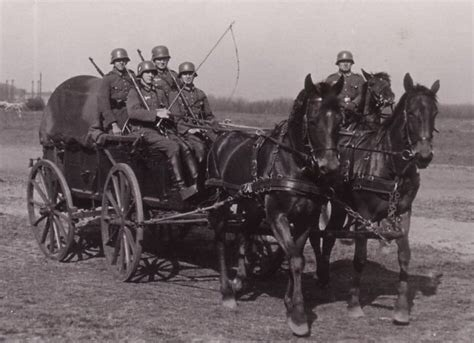
(제2차 세계대전 때 왜 독일군이 독가스를 쓰지 않았느냐는 질문에 대해, 괴링은 '말이 없으면 독일군은 전쟁을 수행할 수가 없는데 상호간에 독가스를 쓰면 말을 잃게 되기 때문이라고 답했다지요?)
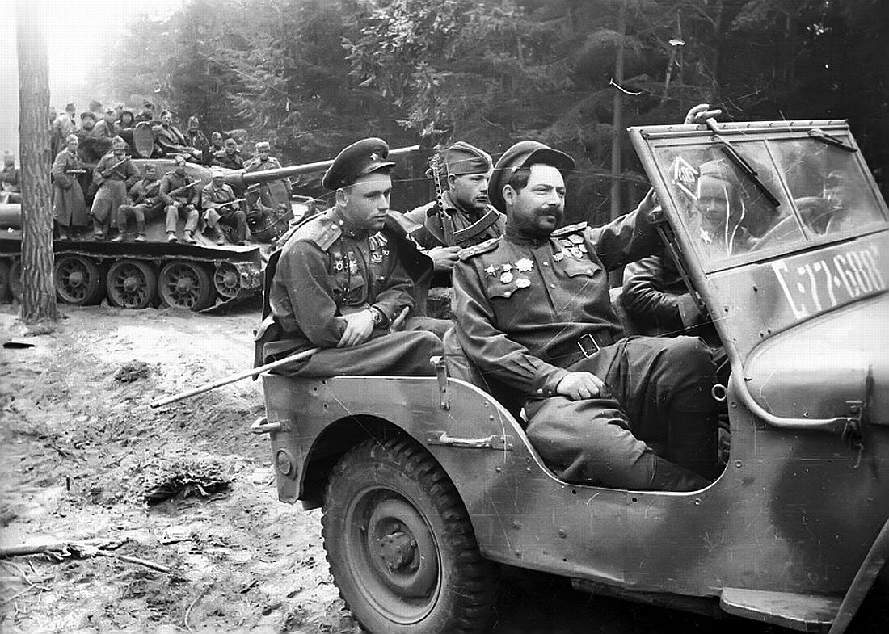
(소련군이 미국으로부터 렌드-리스로 공여받은 지프차가 독일군의 동급 차량 수보다 많았다지요. 정말 전투는 총으로 하지만 전쟁은 엔진으로 하는 것입니다. 독일군에게는 승산이 없었어요.) 사실 가장 이해하기가 어려운 부분은, 왜 히틀러나 나폴레옹이나, 씹기에는 너무 컸던 러시아에 쳐들어갔느냐 하는 것입니다. 둘 다 여러가지 이유가 있었습니다. 히틀러의 경우, 정권의 태생적 속성상, 어차피 파시스트 정권과 공산주의 정권 사이에 평화란 있을 수 없는 것으므로, 좀더 유리한 상황에서 전쟁을 시작하는 것이 더 나았을 것입니다. 나폴레옹의 경우는 좀더 현실적이고 직접적인 이유가 있었습니다. 영국의 목을 조르기 위해 내린 대륙 봉쇄령을 러시아가 어기고 있어서, 동부 유럽으로부터 영국산 상품이 쏟아져 들어오고 있었으므로, 그대로 갔다가는 어차피 영국과의 경제 전쟁에서 말라죽을 것이 뻔했기 때문입니다. 흔히 나폴레옹은 그 주체할 수 없는 전쟁에 대한 갈증 때문에, 러시아로 쳐들어갔다고들 합니다. (심지어 당시 나폴레옹을 직접 수행했던 수하 장성들도 감히 나폴레옹 면전에서 그렇게 투덜거렸습니다.) 하지만 나폴레옹도 나름대로 평화주의자였습니다. 다만 장기판에서의 상황을 한 수 더 내다볼 줄 알았기에, 러시아를 침공할 수 밖에 없었던 것입니다. 어떤 역사가들은 나폴레옹이 치른 대부분의 전투는 방어적 성격이었을 뿐, 한번도 순수한 침략의 목적으로 일으킨 전쟁은 없었다고까지 분석하더군요. 나폴레옹도 히틀러도, 여름철 러시아의 진흙탕 바다와, 겨울철 러시아의 눈보라에 혼쭐이 난 이야기를 하면 사족이겠으므로 여기서 생략하시지요. 다만, 히틀러가 러시아에 쳐들어간 이유 중 하나가, '나폴레옹도 성공하지 못한 일을 내가 해내겠다'라는 개인적인 허영심도 있지 않았을까 하는 의문이 들기는 합니다.
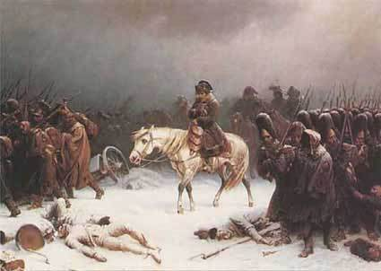
(아 망했어요 망했어) 이렇게 비교를 해보면, 정말 닮은 점이 많지요 ? 적어도 히틀러는 나폴레옹 전기를 읽었을 테니까, 나폴레옹의 패망 이유도 잘 알고 있었을텐데, 그와 비슷한 길을 걷다가 비참한 최후를 맞은 것이 의아하기도 합니다. 알면서도 당한다라는 말이 이럴 때 쓰이는 것일까요 ?
** 전에 다음 블로그에 썼던 글을 조금 고쳐서 다시 올린 글입니다.